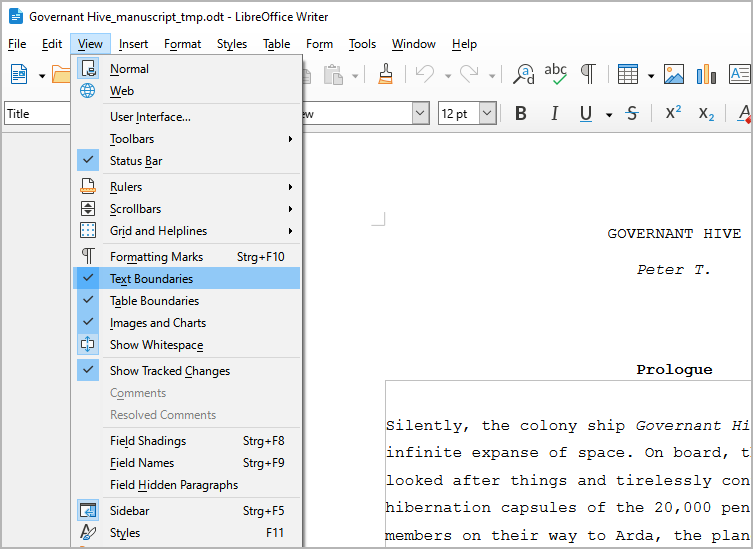
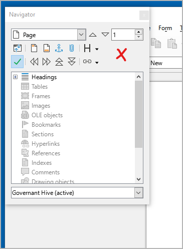

Getting started
Setting up LibreOffice
- Make the sections visible in the manuscript
An essential part of the workflow is writing with LibreOffice Writer (everything also applies to OpenOffice). novelibre creates editable manuscript files that are meant to be temporary. These documents contain structural information that enables novelibre to recognize and correctly sort the sections when reading them back.
For the whole thing to work, it is extremely important that you only write within the section boundaries. To do this, you might want to make the text boundaries visible in the LibreOffice settings.

LibreOffice Writer screenshot: Make sure the View > Text Boundaries menu entry is ticked. Writing outsides the visible text boundaries has no effect on your novelibre project.
- Dock the Navigator
To quickly find the chapters and sections of your novel, it is best to keep the LibreOffice Navigator in sight. I prefer to dock it to the left of the work area. To do this, first press
F5to open the Navigator. By default, it appears as a pop-up window that can be placed anywhere on the screen. To dock it, double-click in a free gray space while holding down theCtrlkey, as shown in the following image.
LibreOffice Writer screenshot: The red X indicates the position for double-clicking.
Tip
The Navigator displays a confusing wealth of information. It is best to reduce this to the headings first. To do this, select “Headings” at the top of the tree and then click on the “Content Navigation View” icon. This works if a document containing headings is loaded.

LibreOffice Writer screenshot: The red O indicates the icon to click on.
- Customize the look of your manuscript
The manuscript created by novelibre has a layout that is similar to the “standard manuscript format,” which is widely used to provide an overview of the total number of pages of a work to be printed.
However, the set font is only available for Windows, and it is not particularly attractive. (I, for my part, have installed the free Courier Prime font on Windows and Linux, which gives me a pleasant typewriter feel.) In addition, hyphenation is turned off, and the page size is set to A4, which is not the worldwide standard.
That’s not for you? No problem. This is what the document templates in LibreOffice are for. So if you don’t like the look of the generated manuscript, simply apply a template that suits your needs and tastes. Of course, you have to design your favorite template first, but your knowledge of this technique will pay off when it comes to designing print pages for self-publishing.
In order to minimize circumstances, I recommend my Style switcher extension, that allows you to customize your manuscript with a single mouse click.
Note
Loading a template or changing the default font and page size has no impact on re-importing the document with novelibre.